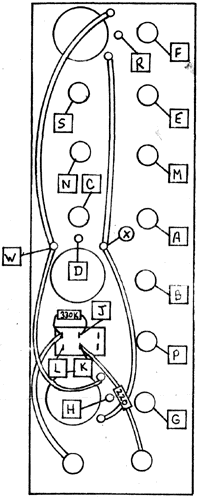

|
VC Wave Multipliers
 USER TESTS: Put a sine wave from an oscillator into the input of the top multiplier. With the switch in the LO position, manually turn the pot up and the signal from the oscillator should appear at the output. With the pot turned down, apply a control voltage from a slew generator or an envelope generator into the VC in jack. The sine wave from the oscillator will be gated through the section just like a VCA. Switch to the HI mode and go through the same manual and control voltage tests. The unit will now function as a waveshaper, producing harmonics from the sine wave input. The harmonics become richer as the pot is turned up or as the control voltage increases. Put a sine wave into the input of the middle multiplier, input 1. Go through the same sequence as above with manual and voltage control. The output should become very rich in harmonics as the pot is turned up or as the control voltage level increases. Apply a second sine wave from another oscillator into input 2. The output should be a complex wave representing the intermodulation of the two input signals and the level of waveshaping being set by the pot or controlled by a voltage. Put a sine wave into the input of the bottom section, and check for manual and voltage control as above. The signal should become very rich in harmonics. In the middle section odd harmonics were generated (1,3,5,7,9,13), but in this section even harmonics are produced (2,4,8). These should be identifiable as the pot is gradually turned up. RESISTOR COLOR CODE
330k : orange-orange-yellow-gold
|